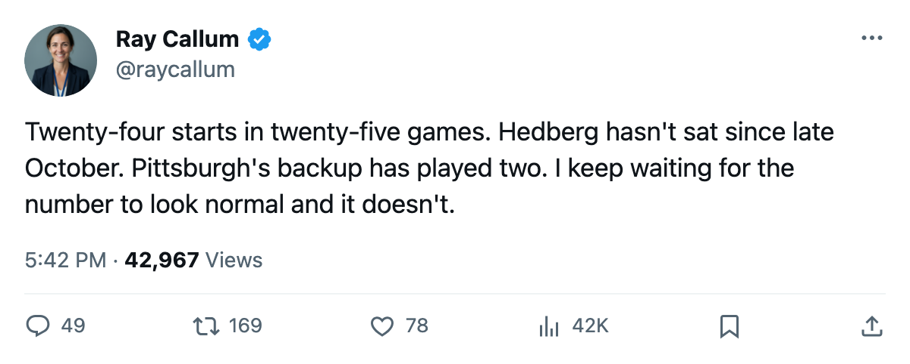

Goalie Watch: Hedberg Has Started 24 of 25, and Pittsburgh's Goal Differential Reflects It
No goaltender in the league carries a heavier share of his club's starts than Pittsburgh's backup-turned-everything, and the Penguins sit fourth in the East with a minus-one
 Ray CallumSenior correspondent · Home Ice Network
Ray CallumSenior correspondent · Home Ice Network
 Johan Hedberg88 has started 24 of
Johan Hedberg88 has started 24 of  Pittsburgh Penguins's 25 games. That is 96 percent of the workload, and the next-highest share in the league belongs to
Pittsburgh Penguins's 25 games. That is 96 percent of the workload, and the next-highest share in the league belongs to  Los Angeles Kings's
Los Angeles Kings's  Roman Cechmanek84 at 92 and
Roman Cechmanek84 at 92 and  Tampa Bay Lightning's
Tampa Bay Lightning's  Nikolai Khabibulin87 at 92. Hedberg is first by four full percentage points.
Nikolai Khabibulin87 at 92. Hedberg is first by four full percentage points.
The Penguins are 9-6-4, 34 points, fourth in the Eastern Conference. Strip the overtime wins and the picture changes. They are 9-6 in regulation, 6-4 in extra periods. Goal differential: 71 for, 72 against, minus-one. Among the top four in the East, that is the worst number by a wide margin.  New York Rangers sits at +9.
New York Rangers sits at +9.  New Jersey Devils at +18.
New Jersey Devils at +18.  Toronto Maple Leafs at +28. Pittsburgh has a minus-one with a goaltender who has barely had a rest day since October.
Toronto Maple Leafs at +28. Pittsburgh has a minus-one with a goaltender who has barely had a rest day since October.
Sebastien Caron79 has played 2 games this season. Two. If Hedberg's elbow goes, or his back, the Penguins are sending in a man who has seen 2 games of league hockey since training camp.
The workload comparison
Hedberg's 24 starts at 96 percent are the highest workload I have tracked in November of any starter with a healthy backup dressed. Cechmanek carries 92 percent in Los Angeles, but the Kings are 5-12-6 and have no playoff pressure. Khabibulin's 92 percent comes behind a Tampa Bay defence that has conceded 66 goals in 26 games. Hedberg is out there every other night with a minus-one team in front of him, winning overtime games to stay in the standings.
Hedberg turns 35 in February. The Penguins play Toronto Maple Leafs on December 10, at  St. Louis Blues on December 12, and at Los Angeles Kings on December 14. Three games in five nights. If he starts all three, he will have 27 starts in 28 games before the calendar turns.
St. Louis Blues on December 12, and at Los Angeles Kings on December 14. Three games in five nights. If he starts all three, he will have 27 starts in 28 games before the calendar turns.
I have written this column for thirty years and I can tell you what November does to a workload like this. It does not usually break down before January. But the Penguins are the deepest team in the East at centre and the thinnest at goaltender, and the one gap will not close itself.
